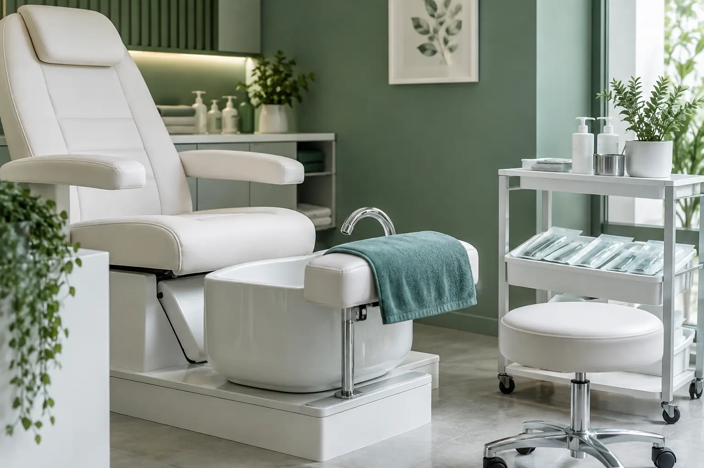

Aparatinis ir klasikinis pedikiūras: metodas ir darbų apimtis
Autorius: Madbeauty redakcija · 2026 m. gruodžio 25 d. 16:00 Lietuvos laiku
Kuo klasikinis, aparatinis ir kombinuotas pedikiūras skiriasi? Palyginkite įrankių principą, odai ir nagams skirtus darbus bei higienos svarbą.

Klasikinis pedikiūras paprastai nusako darbą rankiniais įrankiais, aparatinis – elektrinio aparato antgaliais, o kombinuotas – abiejų metodų derinį. Tačiau pavadinimai nepasako visos paslaugos apimties: ką meistras atliks nagams ir pėdų odai, ar įeina lakavimas, priklauso nuo konkretaus pasiūlymo.
Metodas ir paslaugos apimtis – du skirtingi dalykai
„Klasikinis“, „aparatinis“ ir „kombinuotas“ dažniausiai apibūdina įrankių naudojimo būdą. Tai nėra garantija, kad skirtingų teikėjų paslaugos vienodai atliekamos ar apima tas pačias zonas. Net kombinuoto pedikiūro pavadinimas nepasako, kurioms užduotims bus naudojamas kiekvienas metodas.
- Klasikinis: pavadinimas paprastai nurodo rankinių įrankių naudojimą. Iš jo vieno negalima spręsti, kokie konkretūs odos ar nagų darbai įtraukti.
- Aparatinis: pavadinimas paprastai nurodo elektrinį aparatą su antgaliais. Jis neįrodo, kad bus atliekami visi pėdų odos ar nagų darbai.
- Kombinuotas: gali reikšti, kad skirtingoms užduotims ar zonoms derinami rankiniai įrankiai ir aparatas. Tikslų derinį turi nusakyti pats paslaugos aprašas.
Šie paaiškinimai nusako įprastą pavadinimų vartojimą, o ne vienodą visiems teikėjams taikomą techninį protokolą. Renkantis verta tikrinti darbų sąrašą: ar tvarkomi nagai, kokios pėdų odos zonos įtrauktos ir ar lakavimas yra paslaugos dalis.
Palyginkite tai, ką gaunate
Pavyzdžiui, jei norite tik sutvarkytų nagų be lakavimo, vien žodis „aparatinis“ neatsako, ar toks variantas siūlomas ir kas tiksliai bus atlikta. Jei svarbiausia pėdų odos priežiūra, palyginkite nurodytas zonas ir darbus, o ne vien metodo pavadinimą. Tai iliustracinės situacijos, ne konkretaus teikėjo pasiūlymai.
- Patikrinkite, kokie darbai numatyti nagams ir kokie – pėdų odai.
- Išsiaiškinkite, ar lakavimas, dangos nuėmimas ar kiti papildomi darbai įtraukti, ar užsakomi atskirai.
- Jeigu aprašas nurodo tik metodo pavadinimą, nevertinkite jo kaip visos paslaugos specifikacijos. Kaina ir trukmė čia nenurodomos, nes jos priklauso nuo konkretaus pasiūlymo.
Metodas nepakeičia higienos
Aparato naudojimas savaime nereiškia, kad paslauga saugesnė. NVSC nurodo, kad grožio paslaugų A ir B kategorijos siejamos su odos ar gleivinės pažeidimo tikimybe, o ne vien su įrankio pavadinimu. Reikalavimai įrankių priežiūrai taip pat neišnyksta pasirinkus aparatinį metodą. Daugiau apie tai rašo
Nacionalinis visuomenės sveikatos centras.
Jei turite nagų ar odos problemų, jų neslėpkite prieš kosmetinį vizitą. Amerikos dermatologų akademija pataria dėl medicininių problemų kreiptis į gydytoją ir pabrėžia įrankių švaros bei produktų reakcijų svarbą. Ši informacija nėra individualus sveikatos vertinimas.
Daugiau informacijos: AAD pedikiūro saugos rekomendacijos.
Trumpa pasirinkimo taisyklė
Pirmiausia apsibrėžkite, kokių darbų norite nagams ir pėdų odai, tada palyginkite, ką konkrečiai įtraukia paslaugos aprašas. Metodą vertinkite kaip vieną iš pasirinkimo kriterijų, o ne kaip visos apimties ar saugumo garantiją. Bendrą paslaugos kontekstą rasite puslapyje „Pedikiūro gidas: pėdų priežiūra, nagų sutvarkymas ir lakavimas“.
Procedūrų aprašai kataloge: Klasikinis pedikiūras, Aparatinis pedikiūras, Kombinuotas pedikiūras. Miestą ir realaus teikėjo pasiūlymą pasirinkite kataloge, kai tokia pasiūla pateikta.
Susiję gidai
Šaltiniai
- AAD · manikiūro ir pedikiūro sauga · www.aad.org
- NVSC · grožio paslaugų higienos ribos · nvsc.lrv.lt